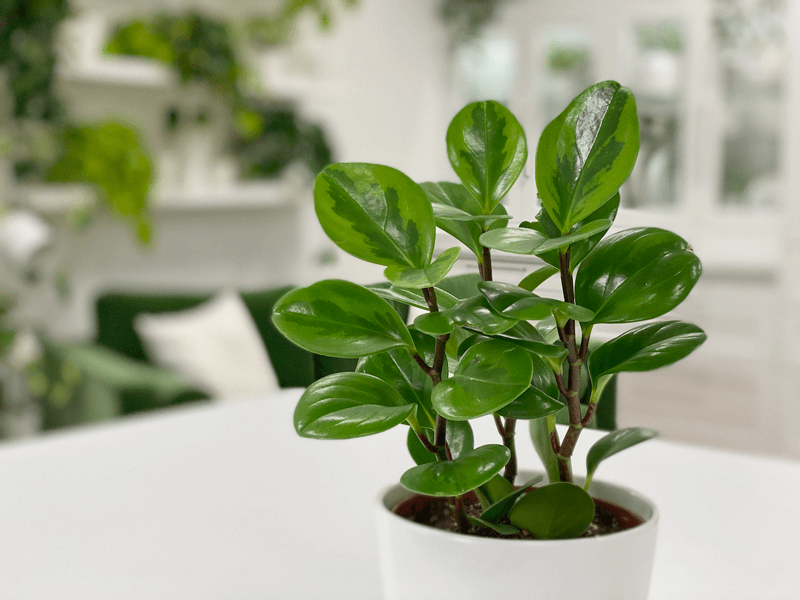
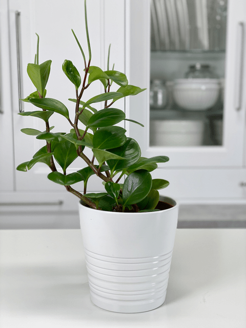
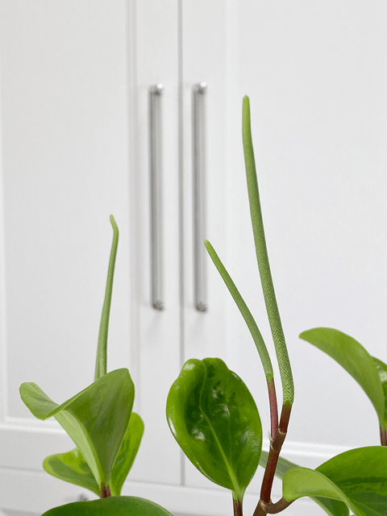
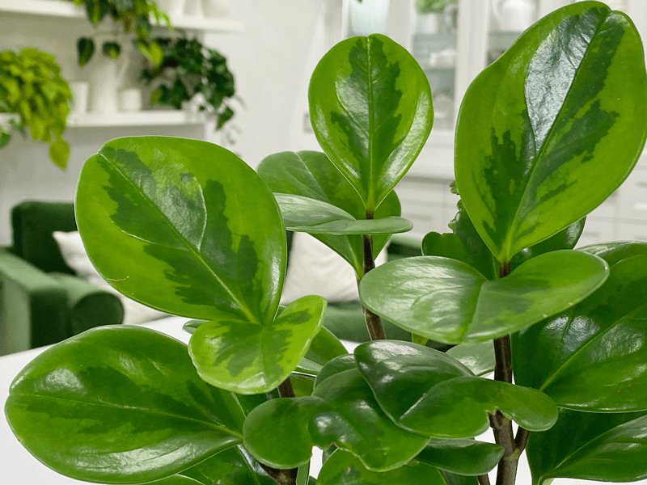
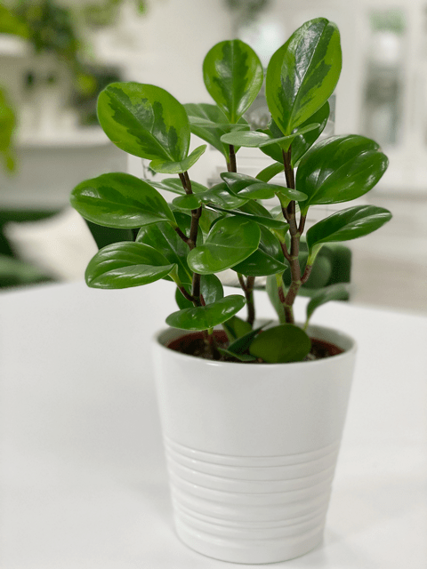

Peperomia – Rosewood | Care Difficulty – Easy
Sometimes referred to as baby rubber plant, peperomia is commonly known as a low-maintenance house plant. There are over 1,000 peperomia species presently recorded–let me name them for you. (clears throat) Ah, yeah, just kidding. I think it’s safe to say that there is bound to be at least one that would grow well in your home. Personally, I love and cherish the Rosewood Peperomia. I picked a few of them up when visiting IKEA (of all places).

The peperomia is a bushy, upright plant with thick stems and fleshy, glossy, cupped leaves. It has a compact, spreading nature and is particularly suited to growing in low natural light to fluorescent lighting, making it perfect for offices and shady spots. The fleshy leaves store water, which is why many peperomias are succulent in nature.
Plant Facts
- Indoor peperomias need to be planted in well-draining soil.
- They have very few roots, so peperomias generally do best when grown in small containers.
- They enjoy being a bit pot-bound, so be sure not to put them in too large a pot, or you’ll risk potential rot.
- Its leaves have a cleaning effect on the air and can thus decrease the concentration of formaldehyde indoors of up to 47 percent. Formaldehyde can be found in older carpets and flooring material.
-

-
Not all peperomia plants lean like this… I failed to rotate it on a regular basis. If you look back at the photo above… this is the same plant. The previous photo was taken 2/20/2020, so you can see how much it has grown.
-

-
Capturing the stamen that started growing from this plant. The green white spikelets appear in late spring and accompany the plant until autumn.
Light Requirements
Peperomias tolerate a wide variety of light conditions (shade, low, medium, bright, or fluorescent lighting), but please keep them out of direct light, so the leaves don’t burn. In nature, they grow under plants and trees using their canopies to protect them from direct sunlight.
Water Requirements
Water when the soil has almost dried out. Take the plant to the sink and saturate the soil until the water starts running out of the drain holes. The critical thing to remember is that they don’t like to be overwatered. Water is stored in the leaves, making these plants drought resistant. Make sure you do not overwater or allow the plant to sit in water, which may result in root rot disease.
Fertilizer (plant food)
Because it does not develop an extensive root system, the peperomia does not need much fertilizer. Fertilize with a diluted liquid during the spring and summer months and hold off during the winter, since most houseplants go dormant then.
Temperature Requirements
They do well at room temperature between 60 – 77 degrees (F). Not one degree colder (kidding! I have to joke when we see such precise numbers). Cold temperatures should be avoided.

Plant Characteristics to Watch For
Diagnosing what is going wrong with your plant is going to take detective work and patience! First of all, don’t panic and don’t throw a plant out prematurely. Take a few deep breaths and work down the list of possible issues. Below, I am going to share some typical symptoms that can arise. When I start to spot troubling signs on a plant, I take the plant into a room with good lighting, pull out my magnifiers, and begin by thoroughly inspecting the plant.
The leaves are turning yellow
- Yellow leaves can be a natural occurrence; they are naturally growing old and ready to go.
- Solution: Give thanks for their time spent with you, remove them, and give them a proper burial. Joking aside, pinch off the yellow leaves, leaving the stem in place. The stem will dry out within a day or two, and then you can remove it without hurting your plant.
The leaves are turning pale yellow
- If your peperomia plant leaves are looking dull, then it caused by too much sunlight.
- Solution: Assess the lighting situation. If it is an area that receives a lot of bright light, relocate the plant. If that doesn’t help, your issue may be overwatering. To overcome this problem, allow the soil to dry out for some time and adjust the watering schedule moving forward.
The leaves are yellow and drying out
- Peperomias are susceptible to red spider mites that suck the sap out of the leaves. Look for fine webbing and little dots (spiders).
- Solution: See below for further reading on how to handle spider mites.
Blisters on the leaves
- Blisters on the leaves can mean that the plant is being overwatered.
- Solution: Cut back on the watering. Remember, the leaves hold water, so adjust the watering schedule, giving the plant a bit more time to dry out.
Blisters that are yellow, brown, or black with yellow, ring-like margins
- This is a disease called Cercospora Leaf Spot, which is most common with this type of plant. There will be raised areas on the undersides of the leaves that appear irregularly shaped and swollen.
- Solution: Prune away the affected foliage and applying a good fungicide to all surfaces of the plant. Improve all of the environmental conditions surrounding the plant by addressing problems such as low lighting, cold drafts, excessive humidity, poor air circulation, and overwatering.
The leaves are falling off
- Falling leaves signify that the plant is in a cold area.
- Solution – Relocate the plant to a warmer spot.
My plant is leaning to one side
- They lean toward a light source
- Solution – Be sure to rotate your plants regularly.
The leaves are wrinkling
- Wrinkling leaves are a sign of underwatering. The rubbery leaves hold water, so when they wrinkle, they are using up their reserves.
- Solution: Take the plant to the sink and saturate the soil until the water starts running out of the drain holes. Refer to the water requirements above. Make sure you do not overwater the plant, as it may result in root rot disease.
I want a bushier plant
- If you want your plant to have a bushier growth, you can pinch them back to encourage them to grow thicker. To do this, simply pinch off the end of the stem and the first leaves by pinching them between your thumb and forefinger.
Growth is weak, existing stems and leaves wilt, darken and become mushy
- This combination is a sign that you’re probably dealing with rot, which is usually caused by excessive watering.
- Solution: At this stage, you should repot the plant with fresh soil and adjust your watering practices in the future to avoid soggy soil. If the majority of the roots have become mushy and brown, the condition has advanced too far, and you must dispose of the plant.
Slow growth and excess wilting
- This can be a sign that the plant’s roots are not getting enough oxygen, or you are possibly overwatering it.
- Solution: If you feel that your watering practices are spot on, try aerating the soil by poking deep holes. I use a chopstick. If the soil feels very dense and compact, repot the plant in a medium-light and airy soil that consists of a good amount of organic matter. Make sure that the pot has drainage holes so the excess water can run out.

Common Bugs to Watch For
Peperomia plants kept indoors and adequately cared for are not typically subject insect pests. The key is to inspect them regularly. Every time I water a plant, I give it a quick look-over.
Bugs/insects feeding on your plants reduces the plant sap and redirects nutrients from leaves. Some chew on the leaves, leaving holes in the leaves. Also watch for wilting or yellowing, distorted, or speckled leaves. They can quickly get out of hand and spread to your other plants.
- Spider mites are the most common for peperomia plants. They are not insects; they are related to spiders. These appear to be tiny black or red moving dots. Spider mites are nearly invisible to the naked eye. You often need a magnifying lens to spot them, or you may notice a reddish film across the bottom of the leaves, some webbing, or even some leaf damage, which usually results in reddish-brown spots on the leaf.
Toxicity
Peperomias are human and pet-friendly BUT can be slightly poisonous if ingested.
© AmieSue.com